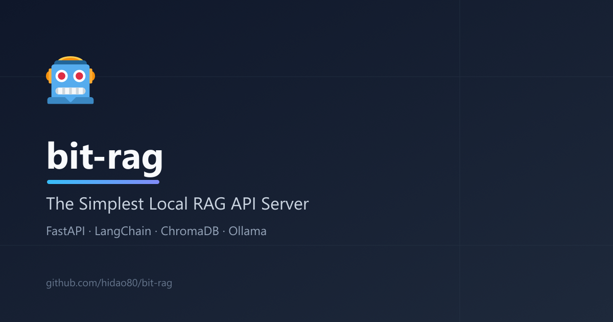

<title>bit-rag — The Simplest Local RAG API Server</title>
<meta charset="utf-8">
<meta name="viewport" content="width=device-width, initial-scale=1">
<meta name="description" content="bit-rag is the simplest local RAG API server. FastAPI + LangChain + ChromaDB + Ollama, no database or web server setup required. Self-hosted, private, and ready in minutes.">
<meta name="color-scheme" content="light dark">
<link rel="icon" href="https://cdn.jsdelivr.net/gh/twitter/twemoji@14.0.2/assets/svg/1f916.svg">

<!-- OGP -->
<meta property="og:type" content="website">
<meta property="og:title" content="bit-rag — The Simplest Local RAG API Server">
<meta property="og:description" content="FastAPI + LangChain + ChromaDB + Ollama. Self-hosted RAG in one Docker command — no separate database or web server needed.">
<meta property="og:site_name" content="bit-rag">
<meta property="og:url" content="https://github.com/hidao80/bit-rag">
<meta property="og:image" content="https://hidao80.github.io/bit-rag/social-preview.png">

<!-- X.com / Twitter -->
<meta name="twitter:card" content="summary_large_image">
<meta name="twitter:title" content="bit-rag — The Simplest Local RAG API Server">
<meta name="twitter:description" content="FastAPI + LangChain + ChromaDB + Ollama. Self-hosted RAG in one Docker command — no separate database or web server needed.">
<meta name="twitter:image" content="https://hidao80.github.io/bit-rag/social-preview.png">

<!-- JSON-LD -->
<script type="application/ld+json">
{
  "@context": "https://schema.org",
  "@type": "SoftwareApplication",
  "name": "bit-rag",
  "applicationCategory": "DeveloperApplication",
  "operatingSystem": "Linux, macOS, Windows",
  "description": "The simplest local RAG API server, built with FastAPI, LangChain, ChromaDB, and Ollama. Runs fully self-hosted with no external services required.",
  "url": "https://github.com/hidao80/bit-rag",
  "codeRepository": "https://github.com/hidao80/bit-rag",
  "license": "https://opensource.org/licenses/MIT",
  "programmingLanguage": "Python",
  "image": "https://hidao80.github.io/bit-rag/social-preview.png",
  "offers": {
    "@type": "Offer",
    "price": "0",
    "priceCurrency": "USD"
  }
}
</script>

<link rel="stylesheet" href="https://cdn.jsdelivr.net/npm/@picocss/pico@2/css/pico.min.css">
<link rel="stylesheet" href="style.css">

<main class="container">

  <div class="topbar">
    <select id="lang-select" class="lang-switch" aria-label="Language">
      <option value="en">English</option>
      <option value="ja">日本語</option>
      <option value="zh">中文</option>
      <option value="es">Español</option>
      <option value="ru">Русский</option>
    </select>
  </div>

  <section class="hero">
    
    <h1>bit-rag</h1>
    <p class="tagline">
      <template type="language-group">
        <span language="en">The simplest local RAG API server. FastAPI + LangChain + ChromaDB + Ollama — no separate database or web server to stand up.</span>
        <span language="ja">最もシンプルなローカルRAG APIサーバー。FastAPI + LangChain + ChromaDB + Ollama ― 別途データベースやWebサーバーの構築不要。</span>
        <span language="zh">最简单的本地 RAG API 服务器。FastAPI + LangChain + ChromaDB + Ollama —— 无需单独搭建数据库或 Web 服务器。</span>
        <span language="es">El servidor API RAG local más simple. FastAPI + LangChain + ChromaDB + Ollama, sin necesidad de una base de datos o servidor web independiente.</span>
        <span language="ru">Простейший локальный RAG API-сервер. FastAPI + LangChain + ChromaDB + Ollama — без отдельной базы данных или веб-сервера.</span>
      </template>
    </p>
    <div class="cta">
      <a role="button" href="https://github.com/hidao80/bit-rag" target="_blank" rel="noopener">
        <template type="language-group">
          <span language="en">View on GitHub</span>
          <span language="ja">GitHubで見る</span>
          <span language="zh">在 GitHub 上查看</span>
          <span language="es">Ver en GitHub</span>
          <span language="ru">Смотреть на GitHub</span>
        </template>
      </a>
      <a role="button" class="secondary" href="#quick-start">
        <template type="language-group">
          <span language="en">Quick Start</span>
          <span language="ja">クイックスタート</span>
          <span language="zh">快速开始</span>
          <span language="es">Inicio rápido</span>
          <span language="ru">Быстрый старт</span>
        </template>
      </a>
    </div>
    <div class="badges">
      
      
      
      
      
    </div>
  </section>

  <section id="why">
    <h2>
      <template type="language-group">
        <span language="en">Why bit-rag</span>
        <span language="ja">bit-ragを選ぶ理由</span>
        <span language="zh">为什么选择 bit-rag</span>
        <span language="es">Por qué bit-rag</span>
        <span language="ru">Почему bit-rag</span>
      </template>
    </h2>
    <p>
      <template type="language-group">
        <span language="en">Spinning up a full database server or web framework just to try RAG is overkill. bit-rag exposes retrieval-augmented generation as a small, self-contained Web API — so it drops straight into existing apps and webhooks, and runs entirely on your own machine.</span>
        <span language="ja">RAGを試すためだけに本格的なデータベースサーバーやWebフレームワークを立ち上げるのはやり過ぎ。bit-ragは検索拡張生成を小さく自己完結したWeb APIとして提供する ― 既存アプリやWebhookにそのまま組み込め、自分のマシン上で完全に動作する。</span>
        <span language="zh">仅仅为了尝试 RAG 就搭建完整的数据库服务器或 Web 框架实在是大材小用。bit-rag 将检索增强生成封装成一个小巧、自包含的 Web API —— 可直接接入现有应用和 Webhook，并完全在你自己的机器上运行。</span>
        <span language="es">Levantar un servidor de base de datos o un framework web completo solo para probar RAG es excesivo. bit-rag expone la generación aumentada por recuperación como una API web pequeña y autocontenida, lista para integrarse en aplicaciones y webhooks existentes, y funciona completamente en tu propia máquina.</span>
        <span language="ru">Разворачивать полноценный сервер базы данных или веб-фреймворк только ради RAG — излишне. bit-rag предоставляет retrieval-augmented generation в виде компактного автономного Web API, который легко встраивается в существующие приложения и вебхуки и полностью работает на вашей машине.</span>
      </template>
    </p>
  </section>

  <section id="features">
    <h2>
      <template type="language-group">
        <span language="en">Features</span>
        <span language="ja">機能</span>
        <span language="zh">功能</span>
        <span language="es">Características</span>
        <span language="ru">Возможности</span>
      </template>
    </h2>
    <div class="grid-features">
      <article>
        <div class="icon">🐳</div>
        <h3>
          <template type="language-group">
            <span language="en">One-command start</span>
            <span language="ja">コマンド1つで起動</span>
            <span language="zh">一条命令启动</span>
            <span language="es">Inicio con un comando</span>
            <span language="ru">Запуск одной командой</span>
          </template>
        </h3>
        <p>
          <template type="language-group">
            <span language="en"><code>docker compose up</code> boots Ollama and the app together. Models are pulled automatically on first run.</span>
            <span language="ja"><code>docker compose up</code> でOllamaとアプリを同時起動。モデルは初回起動時に自動取得。</span>
            <span language="zh"><code>docker compose up</code> 会同时启动 Ollama 和应用。首次运行时自动拉取模型。</span>
            <span language="es"><code>docker compose up</code> inicia Ollama y la app juntos. Los modelos se descargan automáticamente en la primera ejecución.</span>
            <span language="ru"><code>docker compose up</code> запускает Ollama и приложение вместе. Модели загружаются автоматически при первом запуске.</span>
          </template>
        </p>
      </article>
      <article>
        <div class="icon">🔒</div>
        <h3>
          <template type="language-group">
            <span language="en">Fully self-hosted</span>
            <span language="ja">完全セルフホスト</span>
            <span language="zh">完全自托管</span>
            <span language="es">Totalmente autoalojado</span>
            <span language="ru">Полностью автономный хостинг</span>
          </template>
        </h3>
        <p>
          <template type="language-group">
            <span language="en">No cloud API keys, no external vector database. Everything runs locally with Ollama and ChromaDB.</span>
            <span language="ja">クラウドAPIキー不要、外部ベクトルDB不要。OllamaとChromaDBですべてローカル動作。</span>
            <span language="zh">无需云端 API 密钥，无需外部向量数据库。一切都通过 Ollama 和 ChromaDB 在本地运行。</span>
            <span language="es">Sin claves de API en la nube, sin base de datos vectorial externa. Todo se ejecuta localmente con Ollama y ChromaDB.</span>
            <span language="ru">Не нужны облачные API-ключи и внешняя векторная база данных. Всё работает локально с Ollama и ChromaDB.</span>
          </template>
        </p>
      </article>
      <article>
        <div class="icon">📄</div>
        <h3>
          <template type="language-group">
            <span language="en">Markdown-aware ingest</span>
            <span language="ja">Markdown対応インジェスト</span>
            <span language="zh">支持 Markdown 的导入</span>
            <span language="es">Ingesta compatible con Markdown</span>
            <span language="ru">Импорт с учётом Markdown</span>
          </template>
        </h3>
        <p>
          <template type="language-group">
            <span language="en">Splits by heading, keeps tables intact as structured JSON rows, and merges short fragments for better retrieval.</span>
            <span language="ja">見出し単位で分割し、テーブルは構造化JSON行として維持、短い断片はマージして検索精度を向上。</span>
            <span language="zh">按标题拆分，将表格保留为结构化 JSON 行，并合并短片段以提升检索效果。</span>
            <span language="es">Divide por encabezados, conserva las tablas como filas JSON estructuradas y fusiona fragmentos cortos para mejorar la recuperación.</span>
            <span language="ru">Разбивает по заголовкам, сохраняет таблицы как структурированные строки JSON и объединяет короткие фрагменты для лучшего поиска.</span>
          </template>
        </p>
      </article>
      <article>
        <div class="icon">🌐</div>
        <h3>
          <template type="language-group">
            <span language="en">Multilingual answers</span>
            <span language="ja">多言語回答</span>
            <span language="zh">多语言回答</span>
            <span language="es">Respuestas multilingües</span>
            <span language="ru">Многоязычные ответы</span>
          </template>
        </h3>
        <p>
          <template type="language-group">
            <span language="en">Set a response locale per request — answer the same question in English, Japanese, or any language your model supports.</span>
            <span language="ja">リクエストごとに応答言語を指定 ― 同じ質問を英語、日本語、モデルが対応する任意の言語で回答。</span>
            <span language="zh">按请求设置响应语言 —— 用英语、日语或模型支持的任何语言回答同一个问题。</span>
            <span language="es">Define el idioma de respuesta por solicitud: responde la misma pregunta en inglés, japonés o cualquier idioma que soporte tu modelo.</span>
            <span language="ru">Задавайте язык ответа для каждого запроса — отвечайте на один и тот же вопрос на английском, японском или любом языке, поддерживаемом вашей моделью.</span>
          </template>
        </p>
      </article>
    </div>
  </section>

  <section id="quick-start">
    <h2>
      <template type="language-group">
        <span language="en">Quick Start</span>
        <span language="ja">クイックスタート</span>
        <span language="zh">快速开始</span>
        <span language="es">Inicio rápido</span>
        <span language="ru">Быстрый старт</span>
      </template>
    </h2>
    <p><strong>
      <template type="language-group">
        <span language="en">Run with Docker (recommended)</span>
        <span language="ja">Dockerで実行(推奨)</span>
        <span language="zh">使用 Docker 运行(推荐)</span>
        <span language="es">Ejecutar con Docker (recomendado)</span>
        <span language="ru">Запуск через Docker (рекомендуется)</span>
      </template>
    </strong></p>
    <div class="code-row">
      <pre><code class="lang-bash">docker compose up</code></pre>
      <button type="button" class="copy-btn" aria-label="Copy">
        <svg class="icon-copy" viewBox="0 0 24 24" fill="none" stroke="currentColor" stroke-width="2" stroke-linecap="round" stroke-linejoin="round"><rect x="9" y="9" width="13" height="13" rx="2"/><path d="M5 15H4a2 2 0 0 1-2-2V4a2 2 0 0 1 2-2h9a2 2 0 0 1 2 2v1"/></svg>
        <svg class="icon-check" viewBox="0 0 24 24" fill="none" stroke="currentColor" stroke-width="2" stroke-linecap="round" stroke-linejoin="round"><polyline points="20 6 9 17 4 12"/></svg>
      </button>
    </div>
    <p><strong>
      <template type="language-group">
        <span language="en">Run locally</span>
        <span language="ja">ローカルで実行</span>
        <span language="zh">本地运行</span>
        <span language="es">Ejecutar localmente</span>
        <span language="ru">Локальный запуск</span>
      </template>
    </strong></p>
    <div class="code-row">
      <pre><code class="lang-bash">ollama pull nomic-embed-text:latest
ollama pull qwen2.5:1.5b
uv sync
uv run uvicorn src.main:app --reload</code></pre>
      <button type="button" class="copy-btn" aria-label="Copy">
        <svg class="icon-copy" viewBox="0 0 24 24" fill="none" stroke="currentColor" stroke-width="2" stroke-linecap="round" stroke-linejoin="round"><rect x="9" y="9" width="13" height="13" rx="2"/><path d="M5 15H4a2 2 0 0 1-2-2V4a2 2 0 0 1 2-2h9a2 2 0 0 1 2 2v1"/></svg>
        <svg class="icon-check" viewBox="0 0 24 24" fill="none" stroke="currentColor" stroke-width="2" stroke-linecap="round" stroke-linejoin="round"><polyline points="20 6 9 17 4 12"/></svg>
      </button>
    </div>
  </section>

  <section id="api">
    <h2>
      <template type="language-group">
        <span language="en">API at a glance</span>
        <span language="ja">APIの概要</span>
        <span language="zh">API 概览</span>
        <span language="es">Resumen de la API</span>
        <span language="ru">Обзор API</span>
      </template>
    </h2>
    <figure>
      <table class="api-table">
        <thead>
          <tr>
            <th>
              <template type="language-group">
                <span language="en">Endpoint</span>
                <span language="ja">エンドポイント</span>
                <span language="zh">端点</span>
                <span language="es">Endpoint</span>
                <span language="ru">Эндпоинт</span>
              </template>
            </th>
            <th>
              <template type="language-group">
                <span language="en">Method</span>
                <span language="ja">メソッド</span>
                <span language="zh">方法</span>
                <span language="es">Método</span>
                <span language="ru">Метод</span>
              </template>
            </th>
            <th>
              <template type="language-group">
                <span language="en">Description</span>
                <span language="ja">説明</span>
                <span language="zh">说明</span>
                <span language="es">Descripción</span>
                <span language="ru">Описание</span>
              </template>
            </th>
          </tr>
        </thead>
        <tbody>
          <tr>
            <td><code>/ingest</code></td>
            <td>POST</td>
            <td>
              <template type="language-group">
                <span language="en">Register text into the vector DB (background process)</span>
                <span language="ja">テキストをベクトルDBに登録(バックグラウンド処理)</span>
                <span language="zh">将文本注册到向量数据库(后台处理)</span>
                <span language="es">Registra texto en la base de datos vectorial (proceso en segundo plano)</span>
                <span language="ru">Регистрация текста в векторной БД (фоновый процесс)</span>
              </template>
            </td>
          </tr>
          <tr>
            <td><code>/ingest/file</code></td>
            <td>POST</td>
            <td>
              <template type="language-group">
                <span language="en">Register a UTF-8 text file (txt, md, log, yaml, json, etc.)</span>
                <span language="ja">UTF-8テキストファイルを登録(txt, md, log, yaml, jsonなど)</span>
                <span language="zh">注册 UTF-8 文本文件(txt、md、log、yaml、json 等)</span>
                <span language="es">Registra un archivo de texto UTF-8 (txt, md, log, yaml, json, etc.)</span>
                <span language="ru">Регистрация текстового файла UTF-8 (txt, md, log, yaml, json и др.)</span>
              </template>
            </td>
          </tr>
          <tr>
            <td><code>/query</code></td>
            <td>POST</td>
            <td>
              <template type="language-group">
                <span language="en">Answer questions using RAG</span>
                <span language="ja">RAGを使って質問に回答</span>
                <span language="zh">使用 RAG 回答问题</span>
                <span language="es">Responde preguntas usando RAG</span>
                <span language="ru">Ответы на вопросы с помощью RAG</span>
              </template>
            </td>
          </tr>
          <tr>
            <td><code>/debug/search</code></td>
            <td>GET</td>
            <td>
              <template type="language-group">
                <span language="en">Return raw retrieved chunks for a query without invoking the LLM (debug only)</span>
                <span language="ja">LLMを呼び出さずクエリの検索結果を生で返す(デバッグ用)</span>
                <span language="zh">不调用 LLM，直接返回查询的原始检索结果(仅调试用)</span>
                <span language="es">Devuelve los fragmentos recuperados sin invocar el LLM (solo depuración)</span>
                <span language="ru">Возвращает необработанные найденные фрагменты без вызова LLM (только для отладки)</span>
              </template>
            </td>
          </tr>
        </tbody>
      </table>
    </figure>
    <div class="code-row">
      <pre><code class="lang-bash">curl -X POST "http://localhost:8000/query" \
  -H "Content-Type: application/json" \
  -d '{"question": "What is LangChain?"}'</code></pre>
      <button type="button" class="copy-btn" aria-label="Copy">
        <svg class="icon-copy" viewBox="0 0 24 24" fill="none" stroke="currentColor" stroke-width="2" stroke-linecap="round" stroke-linejoin="round"><rect x="9" y="9" width="13" height="13" rx="2"/><path d="M5 15H4a2 2 0 0 1-2-2V4a2 2 0 0 1 2-2h9a2 2 0 0 1 2 2v1"/></svg>
        <svg class="icon-check" viewBox="0 0 24 24" fill="none" stroke="currentColor" stroke-width="2" stroke-linecap="round" stroke-linejoin="round"><polyline points="20 6 9 17 4 12"/></svg>
      </button>
    </div>
  </section>

</main>

<footer class="container">
  <p>
    <template type="language-group">
      <span language="en">MIT License</span>
      <span language="ja">MITライセンス</span>
      <span language="zh">MIT 许可证</span>
      <span language="es">Licencia MIT</span>
      <span language="ru">Лицензия MIT</span>
    </template>
    · <a href="https://github.com/hidao80/bit-rag" target="_blank" rel="noopener">github.com/hidao80/bit-rag</a>
  </p>
</footer>

<script src="https://unpkg.com/multilanguagejs@2.0.1/dist/multilanguagejs.umd.cjs"></script>
<script src="main.min.js"></script>
